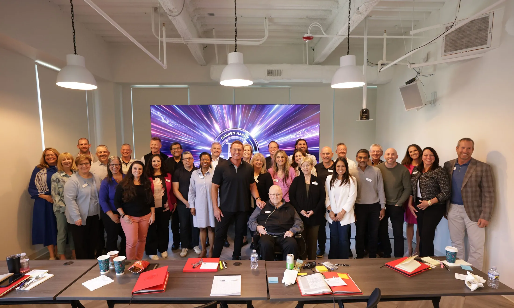
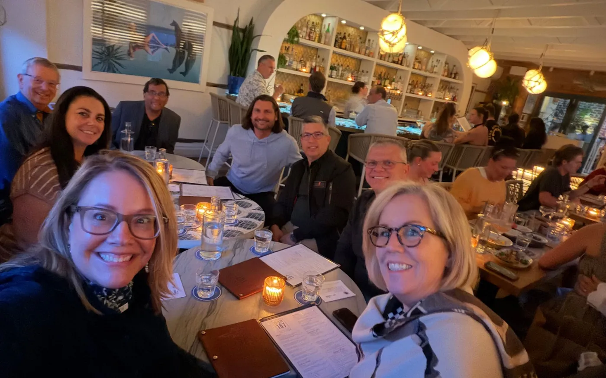
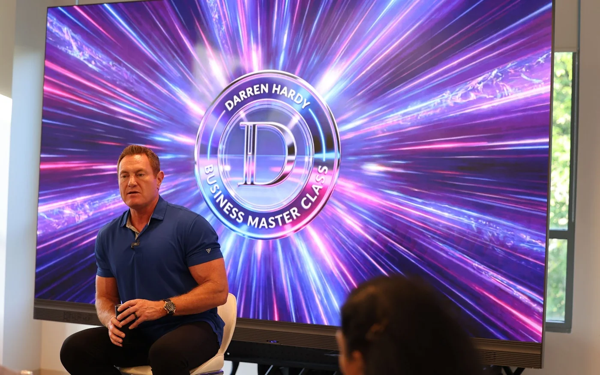

Sunday
Rooftop Reception
Overlooking historic Charleston. Just the 40 of us.
You’ve been in this room from a screen. This time I’d like you in it.
Forty of us, in the studio where we make Business Master Class, for four days. Then four more weeks together to get it installed.
That’s the whole invitation. The rest is logistics.

Overlooking historic Charleston. Just the 40 of us.
10:00 AM to 7:00 PM ET, while Business Master Class goes out live to the world.

Private Q&A, no recording. Then dinner in small groups.

The same 40, live with Darren, getting it built.